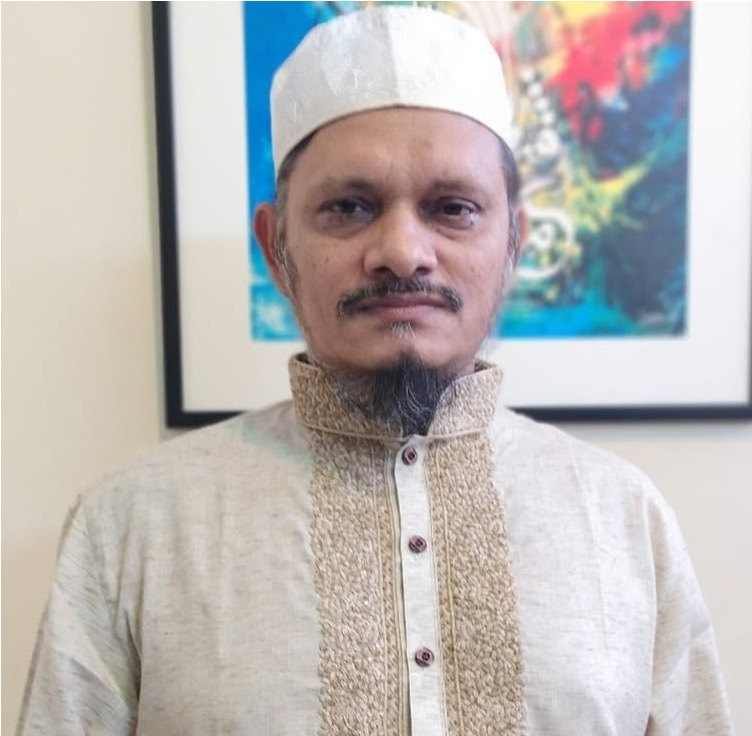

ড. আহমদ আলী
ইসলামিক স্টাডিজের অধ্যাপক
কুরআন, হাদীস ও তাফসীর, আকীদা ও ইসলামী ধর্মতত্ত্ব, তুলনামূলক ফিকহ, ইসলামী চিন্তাধারা ও মতাদর্শ, শরীয়াহ ও আইন, ইসলামী রাষ্ট্রচিন্তা ও প্রশাসন, ইসলামী অর্থনীতি ও ব্যাংকিং, আরবী ভাষা ও ইসলামী সাহিত্য এবং মুসলিম শিল্প ও লিপিকলার মতো বিচিত্র বিষয়ে তাঁর গবেষণা ও লেখালেখি বিস্তৃত।

সাম্প্রতিক আপডেট
পাঠকের ভাবনা পেজ এখন উন্মুক্ত।
ড. আহমদ আলীর গ্রন্থ, গবেষণা ও লেখালেখি সম্পর্কে আপনার রিভিউ, প্রতিক্রিয়া ও ভাবনা পাঠকের ভাবনা পেজে শেয়ার করুন।
এই ওয়েবসাইটটি বর্তমানে সক্রিয়ভাবে উন্নয়ন ও হালনাগাদের কাজের মধ্যে রয়েছে।
এ সময়ে কোনো ত্রুটি, অসম্পূর্ণতা বা ব্যবহারজনিত সমস্যার সম্মুখীন হলে আমরা আন্তরিকভাবে দুঃখিত। আপনার কোনো পরামর্শ, মতামত বা সমস্যার কথা জানাতে অনুগ্রহ করে যোগাযোগ পৃষ্ঠার ফর্ম ব্যবহার করুন।
সাম্প্রতিক লেখা
সময়ের সঙ্গে সংলাপ
রাজনীতি হলো ইসলামের প্রহরী, ত্রাতা
রাজনীতির মূল অর্থ রাষ্ট্রশাসন ও পরিচালনার নীতি। বর্তমানে তা দ্বারা রাজনৈতিক উদ্দেশ্য সিদ্ধির উপায় ও কলাকৌশলকেও বোঝানো হয়। এ অর্থে একে অনেক রাষ্ট্রবিজ্ঞানী ‘ব্যবহারিক রাজনীতি’ নামে…
ইসলামী আন্দোলন: কর্মসূচি বাড়ছে, আত্মশুদ্ধি কি বাড়ছে?!
ইসলামী আন্দোলনের কার্যকর, বিশ্বাসযোগ্য ও টেকসই বিকাশের জন্য কেবল রাজনৈতিক কর্মতৎপরতাই যথেষ্ট নয়; এর পাশাপাশি আত্মশুদ্ধি (তাযকিয়াতুন নফস)-এর ধারাবাহিক অনুশীলনও সমানভাবে অপরিহার্য।…
রাজনীতির কূটনীতি ও আলিম সমাজের সরলতা: পেশাদার রাজনৈতিক চর্চা বনাম ব্যবহৃত হওয়ার ঝুঁকি!!
রাজনীতি কেবল আদর্শিক উচ্চারণ বা নৈতিক অবস্থান গ্রহণের ক্ষেত্র নয়; বরং এটি একটি জটিল ও বহুস্তরবিশিষ্ট বাস্তবতা, যেখানে কূটনীতি, কৌশলগত চিন্তা, দূরদর্শিতা, বাস্তবতাবোধ, সময়োপযোগী…